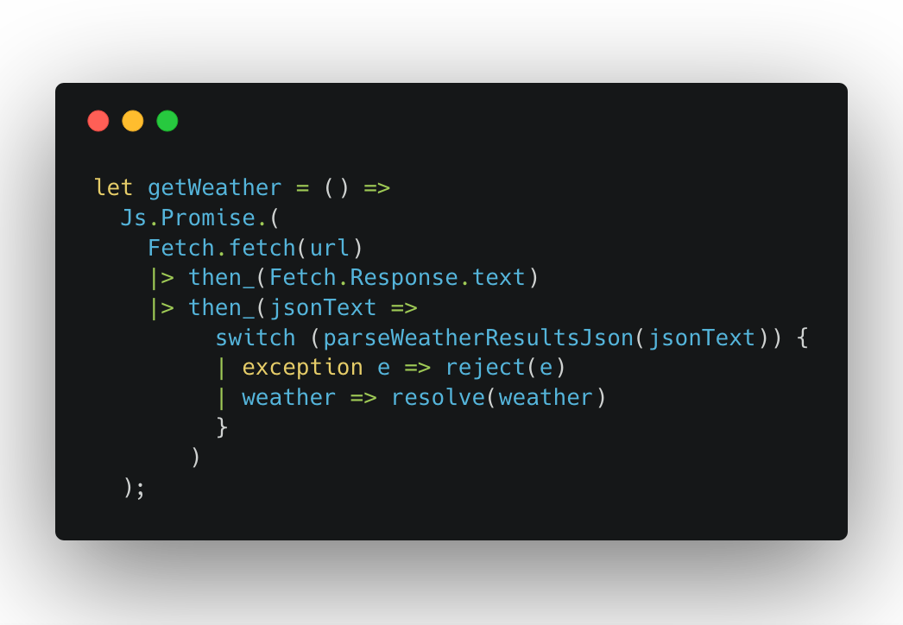

In this tutorial, we're going to build a small weather app using Reason and ReasonReact. There's a link to the source code at the bottom of the page. This tutorial assumes a basic understanding of React, as we'll be using the ReasonReact bindings to build the app. If you haven't used React before, this article is a great place to start.
Let's create a new file, WeatherData.re. This will define the data structure and any related methods for our Weather record. To begin with, let's create the type for weather:

Within this file, we can create new records using this data structure, and the compiler will know that it's a Weather item. From other files, we'll need to tell the compiler what the type is. In Reason, files can be referenced as modules, meaning we don't have to explicitly import them! We can just do this:
I mentioned earlier that Reason has 100% type coverage, but we've only defined our Weather type... where does the rest of the coverage come from? We could explicitly define a type for every variable we use, e.g. let greeting: string = "Hello"; but fortunately the OCaml system can infer types for us. So if we write let greeting = "Hello"; the compiler will still know that greeting is a string. This is a key concept in Reason and guarantees type safety.
Moving back to our project, let's modify App.re so it can store the data we want to display. This will involve the following steps:
1. Defining the type of our state
2. Setting our initial state (with some dummy data, for now)
3. Defining actions that can be applied to state
4. Defining reducers for the component to handle these
Actions define the different things we can do to manipulate state. For example, Add or Subtract. Reducers are pure functions which define how state should be affected by these actions, just like in Redux. They take the action and our previous state as parameters, and return an update type.
Make App.re stateful which requires variants for state and actions.
Create a state type which references our WeatherData type so when we call state it will compile if the weather record is of type WeatherData. Note that the state type is a record which we can tell by the record {} syntax. Example: type state = {weather: WeatherData.weather};
Create an action type, give it a name and, in this case tell it to expect a record of type WeatherData. So whenever we call LoadedWeather we have to be sure to pass it a record of type WeatherData.weather. This is not referring to our state type. When we go to update state, the compiler will check if what we pass LoadedWeather is of the WeatherData type. Here we are not doing that. We are just passing the action a type of WeatherData to do something else with. The thing we will be doing, is updating the state.
The action type is a Variant: a data structure which represents a choice of different values (like enums). Each case in a Variant must be capitalised,and can optionally receive parameters.
Later we can use the defined Variants in a switch expression which lets us handle the different options. The options in this case being the built in Some and None options.

This is one of the most useful features in Reason. Here we're pattern matching our defined actions, based on the parameter we receive in the reducer() method. The compiler knows that our switch statement needs to handle every case of action. If we forget to handle a case, the compiler knows, and will tell us! Our current action only has one option defined.
To use state in this component we need to change the component type to reducerComponent.
This means we need to override the initialState, reducer, properties the we spread in with ...component. What? When we create a ReasonReact component, it comes with props. Check the link if you have no idea what I'm talking about.
make functioninitial state is a function that returns a record {}
In our reducer, remember to use the record syntax as well.
The action type is a Variant: a data structure which represents a choice of different values (like enums). Each case in a Variant must be capitalised, and can optionally receive parameters.
Create a scratch file, here MatchingDemo.re. Create an action type with three options.

Create a function that takes our result type and switches based on the action. The compiler is inferring that r is of the type defined in this file. Given that it's inferring the result type, it realizes that one of the options is misssing and tells us by underlying the offending function with squiggly green lines. If you hover over them you get a nice message.

This is what it looks like in VSCode.

Add @glennsl/bs-json and bs-fetch.
Then add them to your bsconfig.json file like this:

We'll be using the Yahoo Weather API to fetch our data from our WeatherData module, WeatherData.re. Our getWeather() method will call the API, then parse the result using parseWeatherResultsJson(), before resolving with a weather item:
First:
This parses the JSON string response, before traversing the data via the specified fields. It then uses the parseWeatherJson() method to parse the data found inside the condition field with this function which we call in parseWeatherResultsJson:

In this snippet, field and string are properties of Json.Decode. This new syntax "opens" Json.Decode, so its properties can be used freely within the curly brackets (instead of repeating Json.Decode on every field). The code generates a weather item, using the text and temp fields to assign summary and temp values.
float_of_string does exactly what you'd expect: it converts the temperature from a string (as we get from the API) into a float.
option variantNow we've got a getWeather() method which returns a promise, we need to call this when our App component loads. ReasonReact has a similar set of lifecycle methods to React.js, with a few small differences. We'll be using the didMount lifecycle method for making the API call to fetch the weather.
First of all, we need to change our state to show that it's possible to not have a weather item in state - we'll get rid of the dummy data. option() is a built-in variant in Reason, which describes a "nullable" value:
We need to specify None in our state type and initial state, and Some(weather) in our LoadedWeather reducer:
I've had a hard time retaining how and when to call None and Some and its the very reason I am writing this post. So I can have a reference and to maybe save someone else some pain.
state using optionSo, changing our state to the built in option variant we start with this:
and end with this:
By putting option before passing in the WeatherData.weather type we are telling he compilier that this may or may not return a value. We are saying that this value may be null or that its nullable. Reason/oCaml doesn't do null, the concept doesn't exist because a non-existent value wont type check and Reason is type-safe. That's the point. So the option variant lets us do type-safe null values.
initialState using optionWe start with this:

and get to this:

Both before and after look basically the same. initialState gets WeatherData type. In the before version, you can explicity see your dummyWeather variable that we had defined. After, that's gone. We now tell initialState that it will be set to the None option on the WeatherData type, whatever that is. So we don't see the explicity defined record anymore and that is just the way its supposed to be. We haven't recieved any data back when we just start the app, so initialState which is typed as WeatherData will have no value. So, we are telling the compiler that initialState is of type WeatherData but it that it has no value when we start the app.
reducer using optionBefore:

In before version of our reducer, we passed a new weather record that we get back from the api, here called newWeather, to our reducer and tell it to update the app.
In the after version, using option, we tell it to expect some data, newWeather and that is this is the non-null option on our state type. So we are passing in data of type WeatherData expected by our state type and that it should actually have a value.
If the horse is not dead yet, let me know, and I will come back and beat it some more.
Now we can actually make the API request when our component mounts but we need to tell the our component how to do that. Looking at the code below, handleLoadedWeather is a method which dispatches our LoadedWeather action we defined at the top of this file, to the reducer. When the promise resolves, it will be handled by our reducer, and the state will be updated! So when LoadedWeather gets the data is expecting, the promise resolves by sending the data to the reducer. The |>ignore call tell the compiler to ignore the result of this promise. This is because of the way ocaml is set up. We already handled the response when we called handleLoadedWeather.

If we run our app now, the app won't compile. We run into an error... We're currently trying to render information about self.state.weather, but this is set to None until we receive a response from the API. Let's update our App component to show a loading message while we wait:

If you run the app now, it will compile and you get this in the browser:

switchOne thing we haven't thought about is what happens if we can't load our data. What if the API is down, or it returns something we're not expecting? We'll need to recognise this and reject the promise:

This switch statement tries to parse the API response. If an exception is raised, it will reject the promise with that error. If the parsing was successful, the promise will be resolved with the weather item.

Next, we'll change our state to let us recognise if an error has occurred. Let's create a new type which adds an Error case to our previous Some('a) or None which means the horse is not dead and must be beat. Where did that Some('a) or None come from? Its from the built in option type. Again,
('a) is the type signature for any type. It's the type we are passing when we use option. So when we are using the optionOrError type, we are telling the compiler to look for Some option of type ('a).

After setting this up, we'll also need to add a function to Error case to our render function,
let handleWeatherError = () => self.send(WeatherError);
Finally, we need to create a new action and reducer to be used when our getWeather() promise rejects.
This is what the make function looks like after we do the above. Just for fun, i've used some destructuring to pull out the summary and temp values from the data passed into our switch statement. Note that we had to use string_of_float to get the temp value, which is of type float to convert to a string so that ReasonReact could render it to the browswer.

To test our error message, I have passed used this query which looks the city newyork in france which obviously will not work.

These are concepts we've used already, but it's useful to let the user know if something goes wrong. We don't want to leave them hanging with a "loading" message!
There we have it, our first ReasonReact web app. Nice work! We've covered a lot of new concepts, but hopefully you can already see some of the benefits of using Reason.
If you found this interesting & would like to see another post building upon this, please let me know by clicking a reaction below! ‚ù§Ô∏è ü¶Ñ üîñ
The source code.
Exploring ReasonML and functional programming - a free online book about (you guessed it) Reason and FP.
bs-jest - BuckleScript bindings for Jest.
lwt-node - a Reason implementation of the Node.js API
reason-apollo - bindings for Apollo client and React Apollo
Discord channel - The legendarily nice Reason Discord Live Help
Reasonml.chat - The Reason Chat Forum
Reason Town - A podcast on the ReasonML language and community
Redex - The Reason package index
ReasonML - The Reason homepage
ReasonReact - The ReasonReact homepage
Post structure and content substantially inspired by @jlewin's Getting Started tutorial.